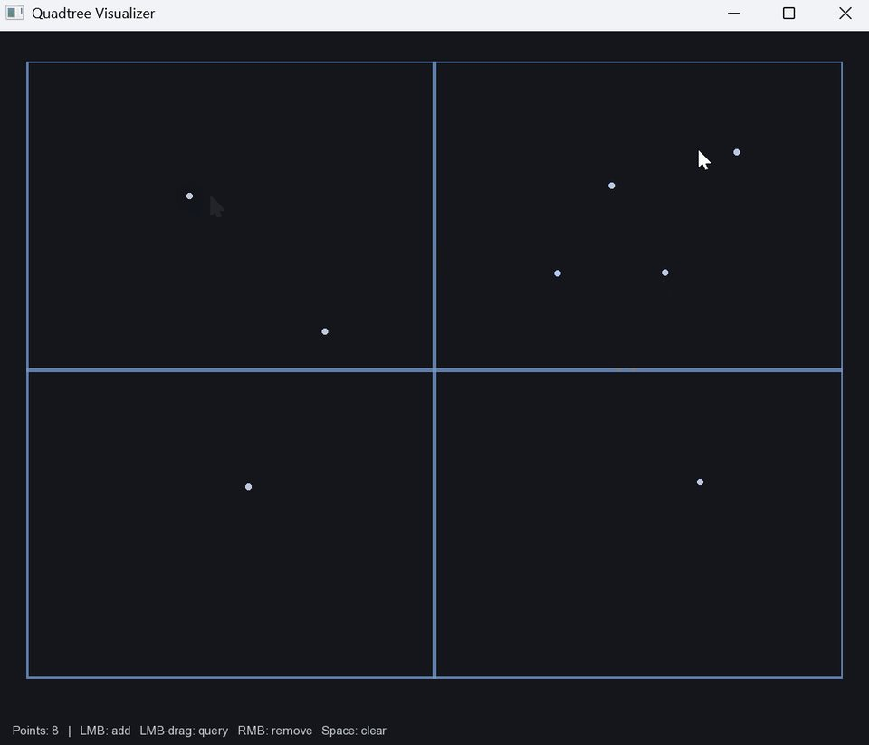
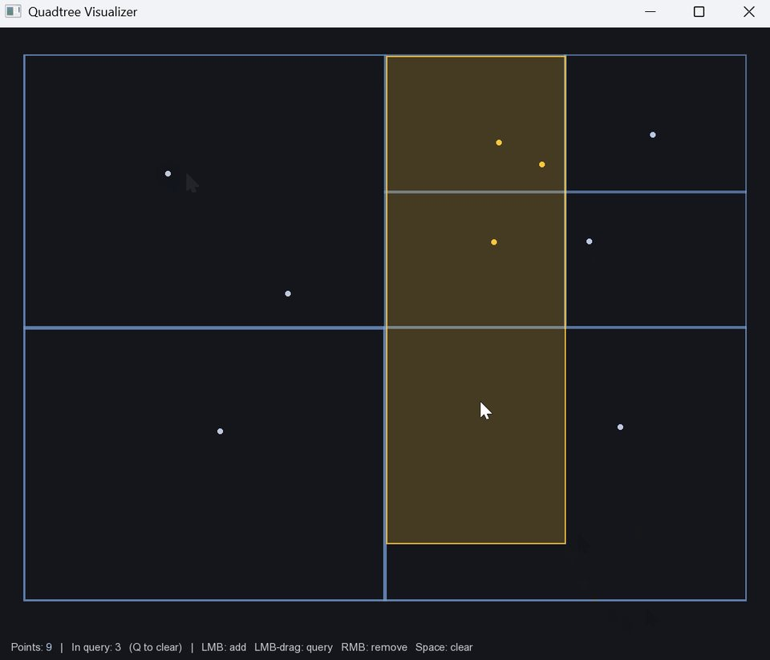
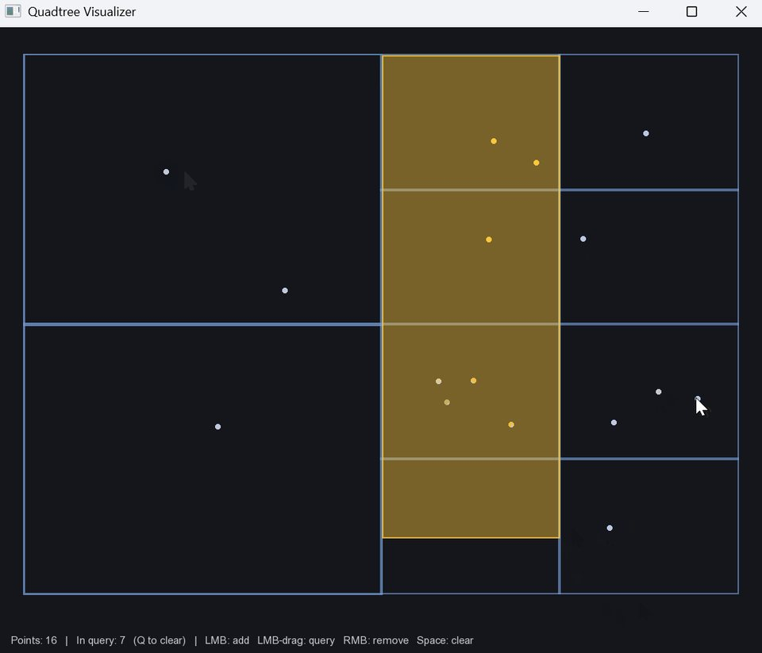

Project / 10 · Systems & visualisation
Quadtree Visualiser
A quadtree in C++ with a window you can draw in. Insert points, drag a query box, and watch the tree split under your cursor.
A point quadtree partitions space by subdividing a cell into four children once it holds more than its capacity. The visualiser draws only the leaf cells, so you see the structure the code is actually using rather than an idealised diagram.
AABB::contains uses half-open intervals — [x, x + w) — so a point on a cell edge belongs to exactly one child. Internal nodes stay empty, queries never return duplicates, and removal walks a single path.
Features
- Point quadtree — insert, query, remove, and clear
- Half-open intervals, so a point never lands in two children
- Query pruning that skips whole subtrees
- Leaf-only rendering that shows the real subdivision
- Interactive window — click to insert, drag to query, right-click to remove
- AABB with contains and intersects, kept in its own file



Next project / 11
Linked-List Visualiser →